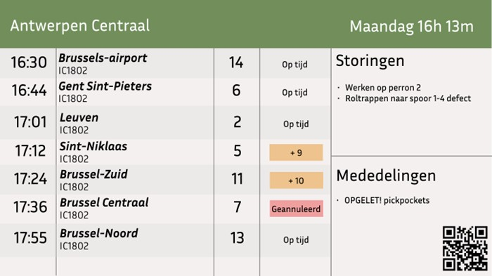
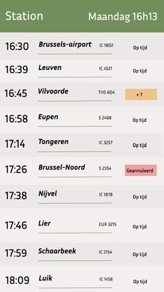
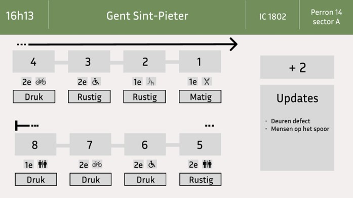

- Ik heb ervoor gekozen om de bestemmingen en het type trein links uit te lijnen. Dit maakt het duidelijker voor de reiziger dan dat de bestemmingen gecentreerd staat. Niet alle bestemmingen zijn even lang waardoor het snel chaotisch kan zijn als de bestemmingen gecentreerd staan.
- In deze schets heb ik de status een rode kleur gegeven voor geannuleerde trein en een oranje kleur voor de treinen die vertraging hebben. De groene kleur voor treinen die op tijd zijn heb ik weggelaten om het scherm een rustigere uitstraling te geven.
- Het lettertype van de status heb ik kleiner gemaakt zodat ook lange woorden zoals geannuleerd mooi in de kader passen.

- Het klokje waar instaat over hoeveel minuten de trein aankomt heb ik weggehaald, deze nam veel plaats in en was daardoor heel onduidelijk. Door het tekort aan plaats had het klokje niet genoeg meerwaarde en heb ik de keuze gemaakt om het weg te halen zodat het scherm wat rustiger toont.
- Ook hier heb ik het lettertype van de status verkleind zodat het mooi op het scherm past.
- De kleurcodes van het overzichtsscherm heb ik overgenomen in dit scherm zodat de kleuren universeel zijn voor alle schermen, dit maakt de kleurcodes duidelijk voor de reizigers.

- De pijl van de onderste rij heb ik later doorlopen van de pijl erboven. De afzonderlijke pijl die er stond heb ik weggehaald zodat het duidelijker is dat het over één trein gaan en geen twee verschillende treinen.
- De lege vakjes heb ik ingevuld met de juiste iconen zodat het duidelijk zichtbaar is wat de functie van deze kaders is.